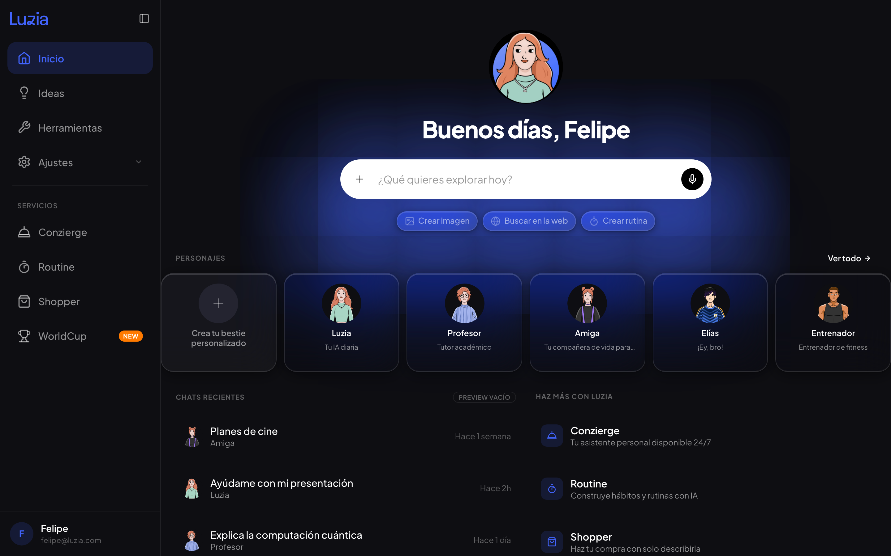
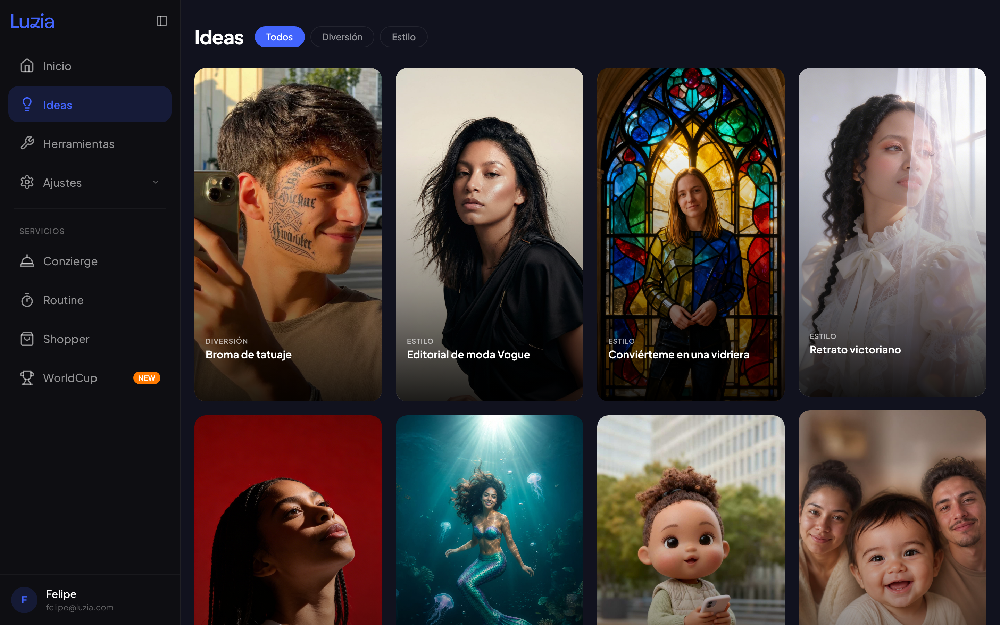
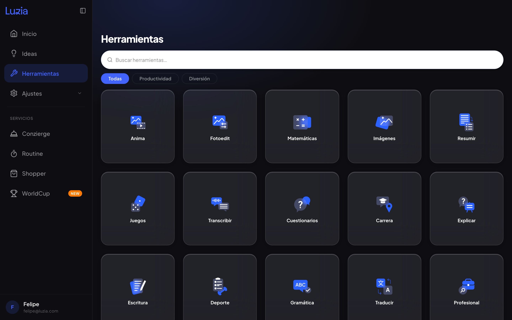

Felipe Amorim
Felipe AmorimGive a mobile-first assistant a proper place on the web.
A responsive product pass that gives the assistant more room, clearer navigation and working interfaces built against production behaviour.

Built for browsing and getting things done.
Ideas and Tools show the two strongest expressions of the wider canvas: image-led discovery and a browsable capability system.


A mobile product had arrived on the web without becoming a web product.
The first web experience carried mobile assumptions into a space with a sidebar, keyboard, cursor and much wider reading surface. It needed its own structure while remaining recognisably Luzia.
Specify the interaction in the real interface.
Build and test responsive surfaces against the production reference. Let navigation collapse with the viewport, keep reading widths controlled, and carry shared patterns across home, ideas, tools and chat.
Treat the assistant like a tool, not a chat bubble.
The answer surface runs full width with its actions directly beneath. This makes the response feel like the product’s work area, while keeping conversation controls close at hand.